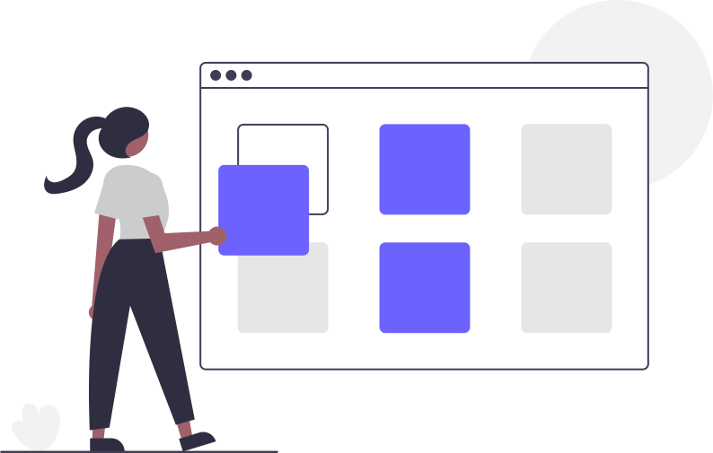

Check out my work!
-

Task List
Task List is an application that allows users to create, read, update, and delete tasks and goals. When a task is completed, a message will be posted to a #task-notifications channel on Slack to notify all members of finished tasks via Slack Bot.
Languages and Technologies Used: Python, Flask, SQLAlchemy, and Slack API (Back End) React (Front End) -

Inspiration Board
A full stack group project that allows users to create, read, update, and delete inspiration boards and cards straight from the UI. Users can also like a card that resonates with them.
Languages and Technologies Used: Python, Flask, and SQLAlchemy (Back End) / React (Front End) -

Personal Portfolio
You are here! My Personal Portfolio website allows users to discover more about me, the work I have done so far, and the work I hope to do!
Languages and Technologies Used: HTML and CSS -

ADAGRAMS
ADAGRAMS is a fun game that gives the player a random set of letters from the English alphabet with which they must create an anagram. Each letter has an associated point value, which this game recognizes and keeps score of.
Languages and Technologies Used: Python | javaScript